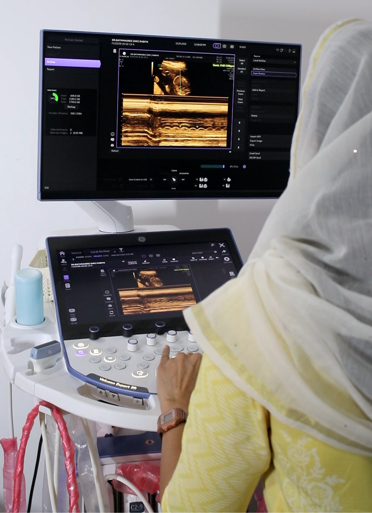
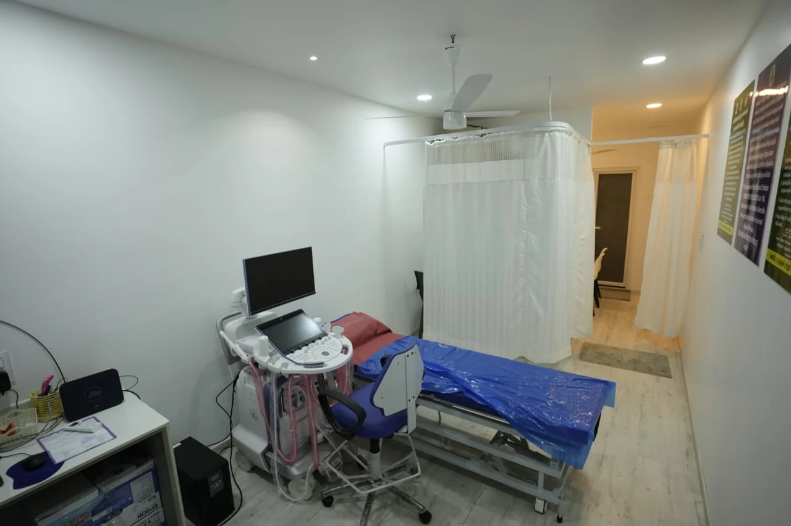
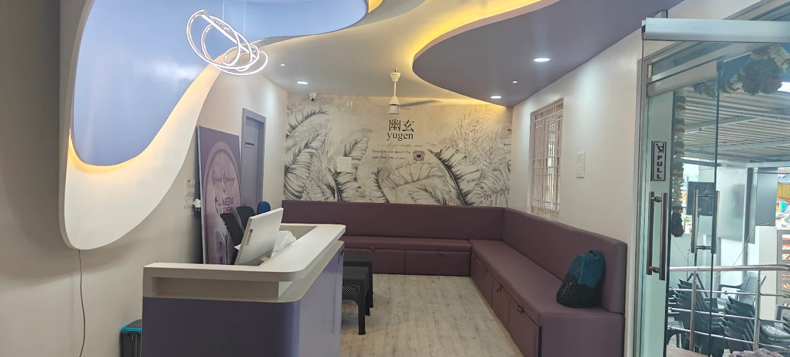

Excellence in
4D Scans for Happy & Healthy Motherhood
We provide advanced diagnostic imaging services with a commitment to accuracy, safety, and patient comfort.
Contact
+91 90428 83031
Clarity, Care & Advanced Fetal Imaging
For over a decade, we've been dedicated to providing exceptional pregnancy scan services that combine cutting-edge 4D ultrasound technology with the warm, personal touch every mother deserves.
Our experienced team of sonologists and genetic counsellors work closely with you at every stage of your pregnancy — from your first trimester NT scan to detailed fetal imaging and Doppler studies. We ensure every scan is thorough, accurate, and delivered with compassion, giving you confidence and clarity throughout your journey.

Every Scan Tells a Story
We capture your baby's first moments with clarity and care
Our Team

Imaging Services
Our scan center provides advanced imaging services for accurate diagnosis, early detection, and comprehensive health care.
Antenatal Scan
An antenatal scan is an ultrasound test during pregnancy to check the baby’s growth and health. It can detect problems early and also checks the placenta and amniotic fluid. It is safe for both mother and baby. It helps ensure a healthy pregnancy and safe delivery.
Dating Scan
4NT scan
Explore Antenatal Scan
Women's Imaging
Women’s Imaging is a set of diagnostic scans used to examine the health of a woman’s breasts, reproductive organs, and related systems. It helps in detecting abnormalities early and supports accurate diagnosis and treatment.
Thyroid Scan
USG mammogram
Explore Women's Imaging

Our Diagnostic Services
High-quality scan services to support early diagnosis and better healthcare decisions.

Advanced Pregnancy & Diagnostic Care
At Meera 4D Scans, we combine advanced ultrasound technology with expert care to deliver accurate, detailed, and compassionate scan services for pregnancy and general health evaluation.
Explore Our ServicesPregnancy Health Awareness
Find Your Trusted Scan Specialist
Search through our team of experienced sonologists, fetal medicine experts, and genetic counsellors dedicated to your pregnancy care.

Dr. S. Irfana nasreen
Fetal imaging specialist
4 years experience

Dr. KamalaRetnam.M
Fetal Intervention Specialist
5 years experience

Dr. Karthik Senthilvel
Fetal Intervention Specialist
11 years experience

Dr. M. Rengan Manikandan
Consultant Cardiology
22 years experience
Excellence in Diagnostic Imaging, Every Day
At Meera 4D Scans, we are committed to delivering accurate, compassionate, and advanced scan services — supporting every mother and baby with the highest standard of care at every stage of pregnancy.

Our Blog
Pregnancy Health & Scan Guides
Expert articles and guides to help you understand your pregnancy scans, tests, and fetal health — written by the specialists at Meera 4D Scans Madurai.

4D Scan

Anomaly Scan at 20th Weeks
Why the Anomaly Scan at 20 Weeks is the Most Important Appointment

Cardiac Health
What is an ECHO Test? Everything You Need to Know About Heart Ultrasound

MRI Scan
Finding the Best Scans Near Me: A Guide to the Cheapest MRI Scan Near Me

MRI Scan Cost
Comparing Brain MRI Cost , Head MRI Scan Cost, and the Cheapest MRI Scan Near Me

Ultrasound Scan Price
Comparing Ultrasound Scan Price in Madurai

Neurology
Advanced Neurology Finding the Most Accurate MRI Brain Scan

Pregnancy Scans
Understanding the Doppler Scan: How It Monitors Your Baby’s Blood Flow

NT Scan
What is NT Scan in Pregnancy? Everything You Need to Know

Doppler Scan
What is a Doppler Scan? Blood Flow Monitoring in Pregnancy

Anomaly Scan
Anomaly Scan & TIFFA — Complete Guide for Pregnant Mothers

Fetal Echo
What is Fetal Echocardiography? Complete Guide

ANC Scan
What is ANC Scan in Pregnancy? Complete Guide
Thyroid Scan
What is Thyroid Scan? Everything You Need to Know
Looking for Scan Support?
Our team is here to guide you with timely and reliable imaging services. Contact us to schedule your scan at your convenience.